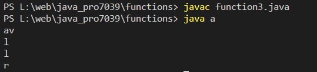

Write a Java method to display the middle character of a string. Note: a) If the length of the string is odd there will be two middle characters. b) If the length of the string is even there will be one middle character.
Code:-
class a {
public static void printMiddleCharacter(String str) {
int len = str.length();
int mid = len / 2;
if (len % 2 == 1) {
System.out.println(str.charAt(mid));
}
else {
System.out.println(str.substring(mid - 1, mid + 1));
}
}
public static void main(String[] args) {
printMiddleCharacter("Java");
printMiddleCharacter("Pallavi");
printMiddleCharacter("Hello");
printMiddleCharacter("World");
}
}
Output:-
